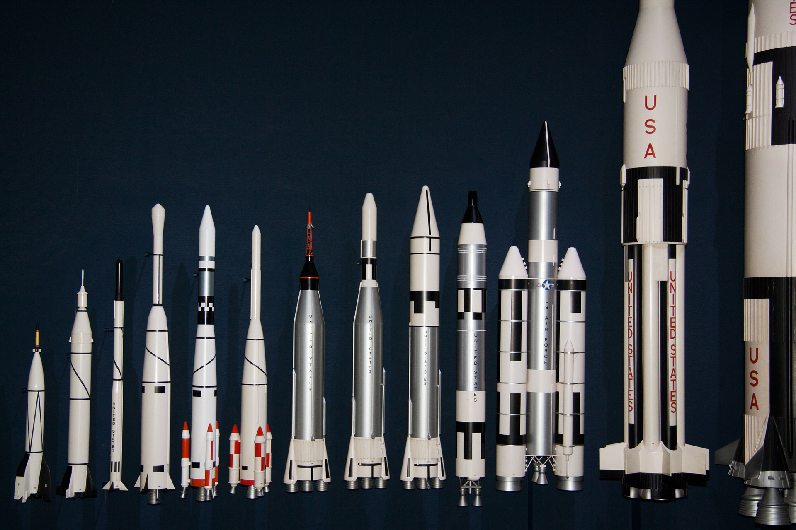

O Falcon 9 é um foguete reutilizável de dois estágios, projetado e fabricado pela SpaceX para o transporte de pessoas e cargas úteis para a órbita da Terra e além. Falcon 9 é o primeiro foguete reutilizável de classe orbital do mundo. A capacidade de reutilização permite que SapceX refile as partes mais caras do foguete, oque, por sua vez, reduz o custo do acesso ao espaço.

O Falcon 9 lança o Dragon para a Estação Espacial Internacional do Complexo de lançamento 39A

Primeiro e segundo estágio após a separação de vôo

Falcon 9 decola com carga útil Iridium-5

Falcon 9 posando no droneship para ler as intruções

Clone dos motores Merlin do Falcon 9 durante a decolagem

O Falcon 9 deixa um rastro de luz ao decolar da Base Aérea de Vandenberg